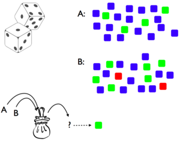

The Infer operator is an ordinary WebPPL function, in the sense that it can occur anywhere that any other function can occur. In particular, we can construct an inference containing another inference inside it: this represents hypothetical inference about a hypothetical inference. Nested inferences are particularly useful in modeling social cognition: reasoning about another agent, who is herself reasoning.
6.1 Prelude: Thinking About Assembly Lines
Imagine a factory where the widget-maker is used to make widgets, but they are sometimes faulty. The tester tests them and lets through only the good ones. You don’t know what tolerance the widget tester is set to, and wish to infer it.
We can represent this scenario as follows:
// This machine makes a widget, which we'll// just represent with a real number:const widgetMachine =Categorical({vs: [.2,.3,.4,.5,.6,.7,.8 ],ps: [.05,.1,.2,.3,.2,.1,.05]})// This machine tests them to get a good one:var getGoodWidget =function(tolerance) {var widget =sample(widgetMachine)return widget > tolerance? widget:getGoodWidget(tolerance)}// If we observe widgets [.6, .7, .8],// what tolerance was the tester set to?const actualWidgets = [.6,.7,.8]var D =Infer(function() {const tolerance =uniform(0.3,0.7) condition(getGoodWidget(tolerance) == actualWidgets[0] )condition(getGoodWidget(tolerance) == actualWidgets[1] )condition(getGoodWidget(tolerance) == actualWidgets[2] )return {tolerance: tolerance } })viz(D)
But notice that the definition of getGoodWidget is exactly like the definition of rejection sampling! We can re-write this as a nested inference model:
// This machine makes a widget, which we'll// just represent with a real number:const widgetMachine =Categorical({vs: [.2,.3,.4,.5,.6,.7,.8 ],ps: [.05,.1,.2,.3,.2,.1,.05]})// This machine tests them to get a good one:var getGoodWidget =function(tolerance) {returnsample(Infer(function() {var widget =sample(widgetMachine)condition(widget > tolerance)return widget } ) )}// If we observe widgets [.6, .7, .8],// what tolerance was the tester set to?const actualWidgets = [.6,.7,.8]var D =Infer(function() {var tolerance =uniform(0.3,0.7) condition(getGoodWidget(tolerance) == actualWidgets[0] )condition(getGoodWidget(tolerance) == actualWidgets[1] )condition(getGoodWidget(tolerance) == actualWidgets[2] )return {tolerance: tolerance } })viz(D)
We are now abstracting the tester machine, rather than thinking about the details inside the widget tester. We represent only that the machine correctly gives a widget above tolerance (by some means).
In order to preserve the return values of getGoodWidget we had to take a single sample from the inferred distribution on widgets. Knowing that we have access to this distribution, we can modify our outer inference to use it directly:
// This machine makes a widget, which we'll// just represent with a real number:const widgetMachine =Categorical({vs: [.2,.3,.4,.5,.6,.7,.8 ],ps: [.05,.1,.2,.3,.2,.1,.05]})// This machine tests them to get a good one:var getGoodWidget =function(tolerance) {returnInfer(function() {var widget =sample(widgetMachine)condition(widget > tolerance)return widget } )}// If we observe widgets [.6, .7, .8],// what tolerance was the tester set to?const actualWidgets = [.6,.7,.8]var D =Infer(function() {var tolerance =uniform(0.3,0.7) var goodWidgetDist =getGoodWidget(tolerance)observe( goodWidgetDist, actualWidgets[0] )observe( goodWidgetDist, actualWidgets[1] )observe( goodWidgetDist, actualWidgets[2] )return {tolerance: tolerance } })viz(D)
This pattern – an outer Infer that observes values from an inner Infer – is a very general and useful way to represent reasoning about reasoning.
6.2 Social Cognition
How can we capture our intuitive theory of other people? Central to our understanding is the principle of rationality: an agent tends to choose actions that she expects to lead to outcomes that satisfy her goals. (This is a slight restatement of the principle as discussed in (Baker:2009ti?), building on earlier work by (Dennett:1989wh?), among others.)
We can represent this in WebPPL as an inference over actions—an agent reasons about actions that lead to their goal being satisfied:
The function transition describes the outcome of taking a particular action in a particular state, the predicate goalSatisfied determines whether or not a state accomplishes the goal, the input state represents the current state of the world. The distribution actionPrior used within chooseAction represents an a-priori tendency towards certain actions.
To make the following examples a bit simpler let’s specialize this to the case where the goal is achieving a particular state, and add a default for the state input:
var chooseAction =function( goalState, transition, state) {var state = (state==undefined)?'start': statereturnInfer(function() {var action =sample(actionPrior)condition(goalState ==transition(state, action))return action } )}
For instance, imagine that Sally walks up to a vending machine wishing to have a cookie. Imagine also that we know the mapping between buttons (potential actions) and foods (outcomes). We can then predict Sally’s action:
We see, unsurprisingly, that if Sally wants a cookie, she will always press button b. In a world that is not quite so deterministic Sally’s actions will be more stochastic:
Technically, this method of making a choices is not optimal, but rather it is soft-max optimal (also known as following the “Boltzmann policy”).
6.2.1 Inferring Goals
Now imagine that we don’t know Sally’s goal (which food she wants), but we observe her pressing button b. We can use Infer to infer her goal (this is sometimes called “inverse planning”, since the outer infer “inverts” the inference inside chooseAction):
Now let’s imagine a more ambiguous case: button b is “broken” and will (uniformly) randomly result in a food from the machine. If we see Sally press button b, what goal is she most likely to have?
Despite the fact that button b is equally likely to result in either bagel or cookie, we have inferred that Sally probably wants a cookie. This is a result of the inference implicitly taking into account the counterfactual alternatives: if Sally had wanted a bagel, she would have likely pressed button a. The inner query takes these alternatives into account, adjusting the probability of the observed action based on alternative goals.
6.2.2 Inferring Preferences
If we have some prior knowledge about Sally’s preferences (which goals she is likely to have) we can incorporate this immediately into the prior over goals (which above was uniform).
A more interesting situation is when we believe that Sally has some preferences, but we don’t know what they are. We can capture this by adding a higher level prior (a uniform) over preferences. Using this approach we can learn about Sally’s preferences from her actions: after seeing Sally press button b several times, what will we expect her to want the next time?
Try varying the amount and kind of evidence. For instance, if Sally one time says “I want a cookie” (so you have directly observed her goal that time) how much evidence does that give you about her preferences, relative to observing her actions?
In the above preference inference, it is extremely important that sally could have taken a different action if she had a different preference (i.e. she could have pressed button a if she preferred to have a bagel). In the program below we have set up a situation in which both actions lead to cookie most of the time:
Now we can draw no conclusion about Sally’s preferences. Try varying the machine probabilities, how does the preference inference change? This effect, that the strength of a preference inference depends on the context of alternative actions, has been demonstrated in young infants by Kushnir, Xu, and Wellman (2010).
6.2.3 Inferring What They Know
In the above models of goal and preference inference, we have assumed that the structure of the world (both the operation of the vending machine and the (irrelevant) initial state) were common knowledge—they were non-random constructs used by both the agent (Sally) selecting actions and the observer interpreting these actions.
What if we (the observer) don’t know how exactly the vending machine works, but think that Sally knows how it works? We can capture this by placing uncertainty on the vending machine inside the overall query but “outside” of Sally’s inference:
Here we have conditioned on Sally wanting the cookie and Sally choosing to press button b. Thus, we have no direct evidence of the effects of pressing the buttons on the machine.
What happens if you condition instead on the action and outcome, but not the intentional choice of this outcome? (That is, change the observe to condition(vendingMachine('state','b') == 'cookie'))
Now imagine a vending machine that has only one button, but it can be pressed many times. We don’t know what the machine will do in response to a given button sequence. We do know that pressing more buttons is less a priori likely.
Compare the inferences that result if Sally presses the button twice to those if she only presses the button once. Why can we draw much stronger inferences about the machine when Sally chooses to press the button twice?
When Sally does press the button twice, she could have done the “easier” (or rather, a priori more likely) action of pressing the button just once. Since she doesn’t, a single press must have been unlikely to result in a cookie. This is an example of the principle of efficiency—all other things being equal, an agent will take the actions that require least effort (and hence, when an agent expends more effort all other things must not be equal). Here, Sally has three possible actions but simpler actions are a priori more likely.
In these examples we have seen two important assumptions combining to allow us to infer something about the world from the indirect evidence of an agents actions. The first assumption is the principle of rational action, the second is an assumption of knowledgeability—we assumed that Sally knows how the machine works, though we don’t. Thus inference about inference, can be a powerful way to learn what others already know, by observing their actions. (This example was inspired by Goodman, Baker, and Tenenbaum (2009))
6.2.4 Joint Inference About Knowledge and Goals
In social cognition, we often make joint inferences about two kinds of mental states: agents’ beliefs about the world and their desires, goals or preferences. We can see an example of such a joint inference in the vending machine scenario. Suppose we condition on two observations: that Sally presses the button twice, and that this results in a cookie. Then, assuming that she knows how the machine works, we jointly infer that she wanted a cookie, that pressing the button twice is likely to give a cookie, and that pressing the button once is unlikely to give a cookie.
Here we have also returned the posterior belief about how likely one press is to yield a cookie. Notice the U-shaped distribution: without any direct evidence about what happens when the button is pressed just once, we can infer that it probably won’t give a cookie—because her goal is likely to have been a cookie but she didn’t press the button just once—but there is a small chance that her goal was actually not to get a cookie, in which case pressing the button once could result in a cookie. This very complex (and hard to describe!) inference comes naturally from joint inference of goals and knowledge.
6.2.5 Inferring Whether They Know
Let’s imagine that we (the observer) know that the vending machine actually tends to return a bagel for button a and a cookie for button b. But we don’t know if Sally knows this! Instead we see Sally announce that she wants a cookie, but pushes button a. How can we determine, from her actions, whether Sally is knowledgeable or ignorant?
We hypothesize that if she is ignorant, Sally chooses according to a random vending machine. We can then infer her knowledge state:
This is a very simple example, but it illustrates how we can represent a difference in knowledge between the observer and the observed agent by simply using different world models (the vending machines) for explaining the action (in chooseAction) and for explaining the outcome (in the condition).
6.2.6 Inferring What They Believe
Above we assumed that if Sally is ignorant, she chooses based on a random machine. This is both not flexible enough and too strong an assumption.
Indeed, Sally may have all kinds of specific (and potentially false) beliefs about vending machines. To capture this, we can represent Sally’s beliefs as a separate randomly chosen vending machine:
By passing this into Sally’s chooseAction we indicate these are Sally’s beliefs, and
By putting this inside the outer Infer we represent the observer reasoning about Sally’s beliefs:
In the developmental psychology literature, the ability to represent and reason about other people’s false beliefs has been extensively investigated as a hallmark of human Theory of Mind.
6.3 Emotion and Other Mental States
So far we have explored reasoning about others’ goals, preferences, knowledge, and beliefs. It is commonplace to discuss others’ actions in terms of many other mental states as well!
We might explain an unexpected slip in terms of wandering attention, a short-sighted choice in terms of temptation, a violent reaction in terms of anger, a purposeless embellishment in terms of joy, and so on. Each of these has a potential role to play in an elaborated scientific theory of how humans represent others’ minds.
6.4 Communication and Language
6.4.1 A Communication Game
Imagine playing the following two-player game. On each round the “teacher” pulls a die from a bag of weighted dice, and has to communicate to the “learner” which die it is (both players are familiar with the dice and their weights). However, the teacher may only communicate by giving the learner examples: showing them faces of the die.
We can formalize the inference of the teacher in choosing the examples to give by assuming that the goal of the teacher is to successfully teach the hypothesis – that is, to choose examples such that the learner will infer the intended hypothesis (throughout this section we simplify the code by specializing to the situation at hand, rather than using the more general chooseAction function introduced above):
var teacher =function(die) {returnInfer(...,function() {var side =sample(sidePrior)condition(learner(side) == die)return side } )}
The goal of the learner is to infer the correct hypothesis, given that the teacher chose to give these examples:
var learner =function(side) {returnInfer(...,function() {var die =sample(diePrior)condition(teacher(die) == side)return die } )}
This pair of mutually recursive functions represents a teacher choosing examples or a learner inferring a hypothesis, each thinking about the other. However, notice that this recursion will never halt—it will be an unending chain of “I think that you think that I think that…”.
To avoid this infinite recursion, say that eventually the learner will just assume that the teacher rolled the die and showed the side that came up (rather than reasoning about the teacher choosing a side):
var teacher =function(die, depth) {returnInfer(...,function() {var side =sample(sidePrior)condition(learner(side, depth) == die)return side } )}var learner =function(side, depth) {returnInfer(...,function() {var die =sample(diePrior);condition( depth ==0? side ==roll(die): side ==teacher(die, depth -1) )return die } )}
To make this concrete, assume that there are two dice, \(A\) and \(B\), which each have three sides (red, green, blue) with weights like so:

Which hypothesis will the learner infer if the teacher shows the green side?
var dieToProbs =function(die) {return die =='A'? [0,.2,.8]: die =='B'? [.1,.3,.6]:'uhoh'}const sidePrior =Categorical({vs: ['red','green','blue'],ps: [1/3,1/3,1/3]})const diePrior =Categorical({vs: ['A','B'],ps: [1/2,1/2]})var roll =function(die) {returncategorical({vs: ['red','green','blue'],ps:dieToProbs(die) })}var teacher =function(die, depth) {returnInfer( {method:'enumerate'},function() {var side =sample(sidePrior)condition(sample(learner(side, depth)) == die)return side } )}var learner =function(side, depth) {returnInfer( {method:'enumerate'},function() {var die =sample(diePrior)condition( depth ==0? side ==roll(die): side ==sample(teacher(die, depth -1) ) )return die } )}viz.auto(learner('green',3))
If we run this with recursion depth 0—that is, a learner that does probabilistic inference without thinking about the teacher thinking—we find the learner infers hypothesis \(B\) most of the time (about 60% of the time). This is the same as using the “strong sampling” assumption: the learner infers \(B\) because \(B\) is more likely to have landed on side 2.
However, if we increase the recursion depth we find this reverses: the learner infers \(B\) only about 40% of the time. Now die \(A\) becomes the better inference, because “if the teacher had meant to communicate \(B\), they would have shown the red side because that can never come from \(A\).”
This model, has been proposed by Shafto, Goodman, and Frank (2012) as a model of natural pedagogy. They describe several experimental tests of this model in the setting of simple “teaching games”, showing that people make inferences as above when they think the examples come from a helpful teacher, but not otherwise.
6.4.2 Communicating with Words
Unlike the situation above, in which concrete examples were given from teacher to student, words in natural language denote more abstract concepts.
However, we can use almost the same setup to reason about speakers and listeners communicating with words, if we assume that sentences have literal meanings, which anchor sentences to possible worlds.
We assume for simplicity that the meaning of sentences are truth-functional: that each sentence corresponds to a function from states of the world to true/false. As above, the speaker chooses what to say in order to lead the listener to infer the correct state:
var speaker =function(state) {returnInfer(...,function() {var words =sample(sentencePrior);condition(state ==listener(words));return words; } )}
The listener does an inference of the state of the world given that the speaker chose to say what they did:
var listener =function(words) {returnInfer(...,function() {var state =sample(statePrior)condition(words ==speaker(state))return state } )}
However, this approach suffers from two flaws: the recursion never halts, and the literal meaning has not been used.
Thus, here we slightly modify the listener function such that the listener either assumes that the literal meaning of the sentence is true, or figures out what the speaker must have meant given that they chose to say what they said:
var listener =function(words) {returnInfer(...,function() {var state =sample(statePrior)condition(flip(literalProb)?words(state): words ==speaker(state) )return state; } )}
Here the probability literalProb controls the expected depth of recursion. Another way to bound the depth of recursion is with an explicit depth argument (which is decremented on each recursion).
We have used a standard, truth-functional, formulation for the meaning of a sentence: each sentence specifies a (deterministic) predicate on world states. Thus the literal meaning of a sentence specifies the worlds in which the sentence is satisfied. That is, the literal meaning of a sentence is the sort of thing one can condition on, transforming a prior over worlds into a posterior.
Here’s another way of motivating this view: meanings are belief update operations, and since the right way to update beliefs coded as distributions is conditioning, meanings are conditioning statements. Of course, the deterministic predicates can be immediately (without changing any other code) relaxed to probabilistic truth functions, that assign a probability to each world. This might be useful if we want to allow exceptions.
6.4.3 Example: Scalar Implicature
Let us imagine a situation in which there are three plants which may or may not have sprouted. We imagine that there are three sentences that the speaker could say:
“All of the plants have sprouted”,
“Some of the plants have sprouted”, or
“None of the plants have sprouted”.
For simplicity we represent the worlds by the number of sprouted plants (0, 1, 2, or 3) and take a uniform prior over worlds.
Using the above representation for communicating with words (with an explicit depth argument), we implement the model as follows:
var allSprouted =function(state) {return state ==3}var someSprouted =function(state) {return state >0}var noneSprouted =function(state) {return state ==0}var meaning =function(words) {return (words =='all'? allSprouted: words =='some'? someSprouted: words =='none'? noneSprouted:console.error("unknown words") )}const statePrior =Categorical({vs: [0,1,2,3],ps: [1/4,1/4,1/4,1/4]})var sentencePrior =Categorical({vs: ["all","some","none"],ps: [1/3,1/3,1/3]})var speaker =function(state, depth) {returnInfer( {method:'enumerate'},function() {var words =sample(sentencePrior)condition(state ==sample(listener(words, depth)))return words } )}var listener =function(words, depth) {returnInfer( {method:'enumerate'},function() {var state =sample(statePrior)var wordsMeaning =meaning(words)condition( depth ==0?wordsMeaning(state): _.isEqual( words,sample(speaker(state, depth -1)) ) )return state } )}viz.auto(listener("some",1))
We see that if the listener hears “some” the probability of three out of three is low, even though the basic meaning of “some” is equally consistent with 3/3, 1/3, and 2/3. This is called the “some but not all” implicature.
The model in the reading invokes a theory of mind (learners are reasoning about teachers’ mental states), but a relatively simple theory of mind (the kinds of mental states ascribed are not complex).
Would this be sufficient for learning more complex ideas (like mathematics, or how to tune a bicycle)?
If not, what might you want to add to the learner’s theory of mind?
6.5.2 Extras
Theory of Mind. For more on Theory of Mind, see Carlson, Koenig, and Harms (2013).
References
Carlson, Stephanie M., Melissa A. Koenig, and Madeline B. Harms. 2013. “Theory of Mind.”WIREs Cognitive Science 4 (4): 391–402.
Goodman, Noah D, Chris L Baker, and Joshua B Tenenbaum. 2009. “Cause and Intent: Social Reasoning in Causal Learning.”Stanford CoCoLab.
6.2 Social Cognition
How can we capture our intuitive theory of other people? Central to our understanding is the principle of rationality: an agent tends to choose actions that she expects to lead to outcomes that satisfy her goals. (This is a slight restatement of the principle as discussed in (Baker:2009ti?), building on earlier work by (Dennett:1989wh?), among others.)
We can represent this in WebPPL as an inference over actions—an agent reasons about actions that lead to their goal being satisfied:
The function
transitiondescribes the outcome of taking a particular action in a particular state, the predicategoalSatisfieddetermines whether or not a state accomplishes the goal, the inputstaterepresents the current state of the world. The distributionactionPriorused withinchooseActionrepresents an a-priori tendency towards certain actions.To make the following examples a bit simpler let’s specialize this to the case where the goal is achieving a particular state, and add a default for the state input:
For instance, imagine that Sally walks up to a vending machine wishing to have a cookie. Imagine also that we know the mapping between buttons (potential actions) and foods (outcomes). We can then predict Sally’s action:
We see, unsurprisingly, that if Sally wants a cookie, she will always press button b. In a world that is not quite so deterministic Sally’s actions will be more stochastic:
Technically, this method of making a choices is not optimal, but rather it is soft-max optimal (also known as following the “Boltzmann policy”).
6.2.1 Inferring Goals
Now imagine that we don’t know Sally’s goal (which food she wants), but we observe her pressing button b. We can use
Inferto infer her goal (this is sometimes called “inverse planning”, since the outer infer “inverts” the inference insidechooseAction):Now let’s imagine a more ambiguous case: button b is “broken” and will (uniformly) randomly result in a food from the machine. If we see Sally press button b, what goal is she most likely to have?
Despite the fact that button b is equally likely to result in either bagel or cookie, we have inferred that Sally probably wants a cookie. This is a result of the inference implicitly taking into account the counterfactual alternatives: if Sally had wanted a bagel, she would have likely pressed button a. The inner query takes these alternatives into account, adjusting the probability of the observed action based on alternative goals.
6.2.2 Inferring Preferences
If we have some prior knowledge about Sally’s preferences (which goals she is likely to have) we can incorporate this immediately into the prior over goals (which above was uniform).
A more interesting situation is when we believe that Sally has some preferences, but we don’t know what they are. We can capture this by adding a higher level prior (a uniform) over preferences. Using this approach we can learn about Sally’s preferences from her actions: after seeing Sally press button b several times, what will we expect her to want the next time?
Try varying the amount and kind of evidence. For instance, if Sally one time says “I want a cookie” (so you have directly observed her goal that time) how much evidence does that give you about her preferences, relative to observing her actions?
In the above preference inference, it is extremely important that sally could have taken a different action if she had a different preference (i.e. she could have pressed button a if she preferred to have a bagel). In the program below we have set up a situation in which both actions lead to cookie most of the time:
Now we can draw no conclusion about Sally’s preferences. Try varying the machine probabilities, how does the preference inference change? This effect, that the strength of a preference inference depends on the context of alternative actions, has been demonstrated in young infants by Kushnir, Xu, and Wellman (2010).
6.2.3 Inferring What They Know
In the above models of goal and preference inference, we have assumed that the structure of the world (both the operation of the vending machine and the (irrelevant) initial state) were common knowledge—they were non-random constructs used by both the agent (Sally) selecting actions and the observer interpreting these actions.
What if we (the observer) don’t know how exactly the vending machine works, but think that Sally knows how it works? We can capture this by placing uncertainty on the vending machine inside the overall query but “outside” of Sally’s inference:
Here we have conditioned on Sally wanting the cookie and Sally choosing to press button b. Thus, we have no direct evidence of the effects of pressing the buttons on the machine.
What happens if you condition instead on the action and outcome, but not the intentional choice of this outcome? (That is, change the
observetocondition(vendingMachine('state','b') == 'cookie'))Now imagine a vending machine that has only one button, but it can be pressed many times. We don’t know what the machine will do in response to a given button sequence. We do know that pressing more buttons is less a priori likely.
Compare the inferences that result if Sally presses the button twice to those if she only presses the button once. Why can we draw much stronger inferences about the machine when Sally chooses to press the button twice?
When Sally does press the button twice, she could have done the “easier” (or rather, a priori more likely) action of pressing the button just once. Since she doesn’t, a single press must have been unlikely to result in a cookie. This is an example of the principle of efficiency—all other things being equal, an agent will take the actions that require least effort (and hence, when an agent expends more effort all other things must not be equal). Here, Sally has three possible actions but simpler actions are a priori more likely.
In these examples we have seen two important assumptions combining to allow us to infer something about the world from the indirect evidence of an agents actions. The first assumption is the principle of rational action, the second is an assumption of knowledgeability—we assumed that Sally knows how the machine works, though we don’t. Thus inference about inference, can be a powerful way to learn what others already know, by observing their actions. (This example was inspired by Goodman, Baker, and Tenenbaum (2009))
6.2.4 Joint Inference About Knowledge and Goals
In social cognition, we often make joint inferences about two kinds of mental states: agents’ beliefs about the world and their desires, goals or preferences. We can see an example of such a joint inference in the vending machine scenario. Suppose we condition on two observations: that Sally presses the button twice, and that this results in a cookie. Then, assuming that she knows how the machine works, we jointly infer that she wanted a cookie, that pressing the button twice is likely to give a cookie, and that pressing the button once is unlikely to give a cookie.
Here we have also returned the posterior belief about how likely one press is to yield a cookie. Notice the U-shaped distribution: without any direct evidence about what happens when the button is pressed just once, we can infer that it probably won’t give a cookie—because her goal is likely to have been a cookie but she didn’t press the button just once—but there is a small chance that her goal was actually not to get a cookie, in which case pressing the button once could result in a cookie. This very complex (and hard to describe!) inference comes naturally from joint inference of goals and knowledge.
6.2.5 Inferring Whether They Know
Let’s imagine that we (the observer) know that the vending machine actually tends to return a bagel for button a and a cookie for button b. But we don’t know if Sally knows this! Instead we see Sally announce that she wants a cookie, but pushes button a. How can we determine, from her actions, whether Sally is knowledgeable or ignorant?
We hypothesize that if she is ignorant, Sally chooses according to a random vending machine. We can then infer her knowledge state:
This is a very simple example, but it illustrates how we can represent a difference in knowledge between the observer and the observed agent by simply using different world models (the vending machines) for explaining the action (in
chooseAction) and for explaining the outcome (in thecondition).6.2.6 Inferring What They Believe
Above we assumed that if Sally is ignorant, she chooses based on a random machine. This is both not flexible enough and too strong an assumption.
Indeed, Sally may have all kinds of specific (and potentially false) beliefs about vending machines. To capture this, we can represent Sally’s beliefs as a separate randomly chosen vending machine:
chooseActionwe indicate these are Sally’s beliefs, andInferwe represent the observer reasoning about Sally’s beliefs:In the developmental psychology literature, the ability to represent and reason about other people’s false beliefs has been extensively investigated as a hallmark of human Theory of Mind.